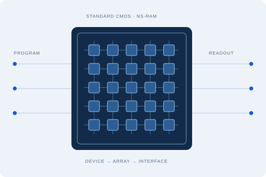

Programming and readout
Characterising current–voltage response, pulse-driven behaviour and read-delay dependence under defined operating sequences.
NS-RAM
At AIMS, we study how standard CMOS transistors respond to electrical pulses. Our experiments build on the NS-RAM concept introduced by Pazos et al. in Nature (2025).
ONGOING RESEARCH
Neuro-synaptic random access memory (NS-RAM) brings neural and synaptic functions into a transistor-based computing framework. At AIMS, we investigate NS-RAM devices and arrays fabricated through a standard CMOS design flow.
We combine post-silicon electrical characterisation with circuit simulation to study how device responses depend on programming, readout and operating conditions. This work guides the design of array interfaces and the next stages of system integration.

WHAT WE INVESTIGATE
Characterising current–voltage response, pulse-driven behaviour and read-delay dependence under defined operating sequences.
Comparing measurements with circuit simulations to investigate floating-body behaviour, isolation conditions and the preparation of conductance states.
Comparing individual cells and layout variants using consistent test protocols, while preserving the identity and acquisition history of each device.
Defining the analog readout, signal-processing and digital-control requirements for experiments with fabricated NS-RAM arrays.
SYSTEM DIRECTION
Our system concept combines NS-RAM arrays with board-level analog interfaces and FPGA-based control. It provides a framework for investigating the roles of the device array, peripheral circuits and digital processing in neural computation.
Programmed device states
and electrical responses
Biasing, sensing
and data conversion
Sequence control
and digital processing
Conceptual system diagram. End-to-end neural-network inference is a research objective.
CURRENT RESEARCH QUESTIONS
Our present studies examine how bias conditions and programming history affect the observed conductance window. Comparing state preparation, read timing and cell-to-cell differences helps connect device behaviour to reproducible circuit operation.
The microscopic origin and long-term stability of these states remain active research questions. We evaluate measured device response, simulated behaviour and system-level objectives as distinct parts of the research programme.